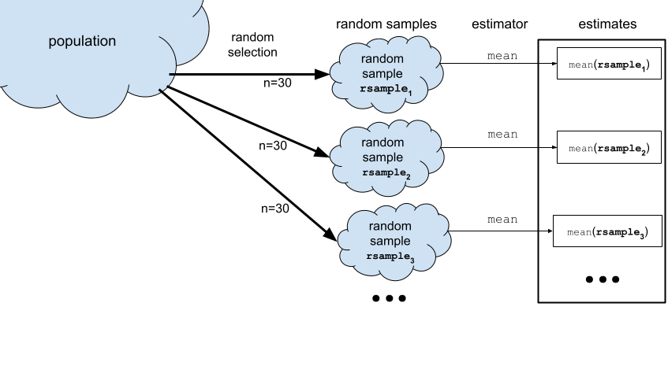

Sampling distributions#
Click here to run the notebook interactively, so you can play with the code examples.
Notebook setup#
# Install stats library
%pip install --quiet ministats
[notice] A new release of pip is available: 26.0 -> 26.0.1
[notice] To update, run: pip install --upgrade pip
Note: you may need to restart the kernel to use updated packages.
# Figures setup
import matplotlib.pyplot as plt
import seaborn as sns
plt.clf() # needed otherwise `sns.set_theme` doesn't work
sns.set_theme(
style="whitegrid",
rc={'figure.figsize': (8, 3)},
)
# High-resolution figures please
%config InlineBackend.figure_format = 'retina'
def savefig(fig, filename):
fig.tight_layout()
fig.savefig(filename, dpi=300, bbox_inches="tight", pad_inches=0)
<Figure size 640x480 with 0 Axes>
Introduction#
The sampling distribution is one of the most complex ideas in STATS 101 that many readers find difficult to understand. The good news is that once you understand sampling distributions, you will understand the common factor behind all the formulas and procedures.
Estimates and estimators#
In statistics, we use the term estimator to refer to the function that computes estimates from a data sample \(\mathbf{x} = [x_1, x_2, … x_n]\). For example the function \(\texttt{mean}(\mathbf{x}) = \frac{1}{n} \sum_i x_i\) computes the mean of the sample (the average value).
Figure 1. The estimator mean computes the sample mean \(\overline{\mathbf{x}}\).
Estimators have this name because we use them to estimate the parameters of the population. In this case, the sample mean is an estimate for the population mean \(\mu\).
Any given estimate we calculate from a particular sample will be an approximation to the true population mean.
Probability models#
The concept of a random variable, denoted \(X\), is a key building block in probability theory. The random variable \(X\) is a quantity that can take on different values, and it is described by a probability distribution function \(f_X\), which we use to compute the probability of different possible outcomes of the random variable \(X\).
When learning about random variables, readers are usually exposed to numerous formulas and equations for describing probability distributions. These math equations can be hard to understand, especially for people who haven’t done math recently. Using computer models, however, makes probability concepts much more accessible. Specifically, computers give us two additional points of view of the math equations:
Visualizations. Plotting the probability distribution \(f_X\) for the random variable \(X\) gives you a visual representation of the possible values this variable can have.
Computer-assisted calculations. Probability calculations can be done easily using Python as a calculator.
Probability model for the general population#
Let’s now build the specific probability model we need for the analysis of the students’ IQ scores. We know the IQ scores in the general population has mean \(\mu=100\) and standard deviation \(\sigma=15\). We will denote the general population as \(X \sim \mathcal{N}(\mu=100,\sigma=15)\).
import numpy as np
from scipy.stats import norm
mu = 100
sigma = 15
rvX = norm(mu, sigma)
xs = np.linspace(30, 170)
ax = sns.lineplot(x=xs, y=rvX.pdf(xs));
ax.set_xlabel("$x$")
ax.set_ylabel("$f_{X}$")
savefig(plt.gcf(), "figures/samples_from_rvX_n30.png")

This is the distribution of IQ scores we can expect to observe for the general population.
Random samples from the general population#
We’ll use the notation \(\mathbf{X} = (X_1, X_2, \ldots, X_{30})\) to describe a random sample from the general population.
To get a idea of what these random samples look like, we can generate \(10\) samples \(\mathbf{x}_1, \mathbf{x}_2, \mathbf{x}_3, \ldots, \mathbf{x}_{10}\) of size \(n=30\) from \(X \sim \mathcal{N}(\mu=100, \sigma=15)\) as follows.
np.random.seed(5)
samples = [rvX.rvs(30) for i in range(10)]
with plt.rc_context({"figure.figsize":(8,2.8)}):
ax = sns.stripplot(samples, orient="h", s=3, color="C0", alpha=0.8, jitter=0)
ax.set_xlim([70,130])
for i, sample in enumerate(samples):
xbar = np.mean(sample)
ax.scatter(xbar, i, marker="D", s=45, color="C1", zorder=10)
savefig(plt.gcf(), "figures/samples_from_rvX_n30.png")

The diamond markers indicate the position of the sample means computed from each sample: \([\overline{\mathbf{x}}_1, \overline{\mathbf{x}}_2, \overline{\mathbf{x}}_3, \ldots, \overline{\mathbf{x}}_{10}]\).
In the next section we’re going to talk about the distribution of the diamond shapes, which correspond to the means computed from random samples.
Sampling distributions#
The sampling distribution of the mean for samples of size \(n=30\) from the general population \(X \sim \mathcal{N}(100,15)\) is the probability distribution of the random variable \(\overline{\mathbf{X}} = \mathbf{Mean}(\mathbf{X})\), where \(\mathbf{X} = (X_1, X_2, \ldots, X_{30})\) is a random sample from \(\mathcal{N}(100,15)\). The sampling distribution describes the kind of means we can expect to observe if we compute the mean for a sample of size \(n=30\) from the standard normal.
REPEATS
The math description of the sampling distribution of the estimator \(\tt{mean}\) for samples of size \(n\) from the population \(X\) is based on the concept of a random sample \(\mathbf{X} = [X_1, X_2, \ldots, X_n]\).
The sampling distribution of an estimator describes the estimates we can expect to observe from random samples from the population \(\mathbf{X} = (X_1, X_2, \ldots, X_n)\). For example, the sampling distribution of the mean is the function \(\tt{mean}(\mathbf{X}) = \frac{1}{n} \sum_i X_{i}\), where each \(X_{i}\) is a random observation from the general population. The sampling distribution of the mean for samples of size \(n=30\) from the standard normal distribution \(X \sim \mathcal{N}(100,15)\) is denoted \(\overline{\mathbf{X}} = \tt{mean}(\mathbf{X})\), where \(\mathbf{X} = [X_{1},X_{2}, \ldots, X_{30})\) is a random sample.
Figure NN. The sampling distribution of the mean for samples of size \(n\).
The random variable \(\overline{\mathbf{X}}\) describes the kind of means we can expect to observe if we compute the mean for a sample of size \(n=30\) from the standard normal.
Sampling distributions using simulation#
Another way to think about the sampling distribution of an estimator is to think of the variability estimates you would obtain if you repeatedly generated different samples from the population.

Now imagine we generate 990 more samples to obtain a total of \(N=1000\) samples from the population model. We can visualize the sampling distribution of the mean \(\overline{\mathbf{X}} = \texttt{mean}(\mathbf{X})\) by plotting a histogram of the means computed from the \(1000\) random samples, xbars = \([\overline{\mathbf{x}}_1, \overline{\mathbf{x}}_2, \overline{\mathbf{x}}_3, \ldots, \overline{\mathbf{x}}_{1000}]\), where \(\overline{\mathbf{x}}_j\) denotes the sample mean computed from the data in the \(j\)th sample, \(\overline{\mathbf{x}}_j = \texttt{mean}(\mathbf{x}_j)\).
REPEATS
To visualize the sampling distribution of the mean \(\overline{\mathbf{X}} = \texttt{mean}(\mathbf{X})\),
we can generate \(N=1000\) samples from the population model:
\(\mathbf{x}_1, \mathbf{x}_2, \mathbf{x}_3, \ldots, \mathbf{x}_{1000}\),
then plot a histogram of the means computed from the \(1000\) random samples,
xbars = \([\overline{\mathbf{x}}_1, \overline{\mathbf{x}}_2, \overline{\mathbf{x}}_3, \ldots, \overline{\mathbf{x}}_{1000}]\),
where \(\overline{\mathbf{x}}_j\) denotes the sample mean computed from the data in the \(j\)th sample,
\(\overline{\mathbf{x}}_j = \texttt{mean}(\mathbf{x}_j)\).
N = 1000 # number of random samples
n = 30 # sample size
xbars = []
for j in range(0, N):
sample = rvX.rvs(n)
xbar = np.mean(sample)
xbars.append(xbar)
# xbars[0:5]
with plt.rc_context({"figure.figsize":(8,2.8)}):
ax = sns.histplot(xbars, color="C1", bins=40, stat="density")
ax.set_xlim([70,130])
sns.scatterplot(x=xbars, y=-0.01, color="C1", marker="D", alpha=0.1, ax=ax)
ax.set_xlabel("$\\overline{\\mathbf{x}}$")
ax.set_ylabel("$f_{\\overline{\\mathbf{X}}}$")
ax.set_title(r"Sampling distribution of the mean for samples of size $n=30$ from the null population $X$.")

The above figure shows the sampling distribution of the mean for samples of size \(n=30\) from the general population model \(X \sim \mathcal{N}(\mu=100, \sigma=15)\). The histogram shows the “density of diamond shapes,” and provides a representation of the sampling distribution of the mean \(\overline{\mathbf{X}} = \tt{mean}(\mathbf{X})\).
Using computer simulations to repeatedly generate samples and compute the estimator value allows us to study the sampling distribution of any estimator. We can generate visualizations of the sampling distribution, and evaluate probabilities, and do calculations with sampling distributions. This hands-on experience with sampling distributions is extremely important, because many statistical analysis procedures like hypothesis testing depend on estimators. Indeed, once you understand sampling distributions, many of the statistics applications become very straightforward.
We’ll still look at all the formulas and equations for describing the properties of the sampling distributions (law of large numbers, central limit theorem, etc.), but we’ll understand these results much better by working through hands-on simulations. In other words, knowing Python will allow you to check the math instead of taking it on faith. Even better, running various simulations will allow us to study the limitations of the analytical approximation formulas, to understand in what situations they stop being accurate.
Two ways to work with sampling distributions#
You can use either a math description (analytical formulas) or a computational description (simulations) for the sampling distribution. Although the two descriptions seem very different on the surface, they both describe the same underlying concept. I’ve compiled a little list of the key properties of the estimator \(\tt{mean}\) to show the correspondences between two types of descriptions.

ALT. see images/math_descr_and_comp_descr.png
{kind=link}
The two descriptions give us two different ways to do probability calculations. For example, we can visualize the sampling distribution of the estimator \(\tt{mean}\), by plotting the probability density function of the random variable \(\overline{\mathbf{X}} = \tt{mean}(\mathbf{X})\) or by plotting a histogram of the values \([\tt{mean}(\mathbf{x}_1), \tt{mean}(\mathbf{x}_2), \ldots, \tt{mean}(\mathbf{x}_N)]\).
Suppose someone asks us to compute the probability \(\Pr(\{ a \leq \overline{\mathbf{X}} \leq b \})\), which describes the probability that the estimate computed from a random sample of size \(n\) will be between \(a\) and \(b\). We can obtain the answer using the probability description by calculating the difference in the cumulative distribution function \(\Pr(\{ a \leq \overline{\mathbf{X}} \leq b \}) = F_{\overline{\mathbf{X}}}(b) - F_{\overline{\mathbf{X}}}(a)\).
Using the computational approach, we can obtain the same probability calculating by computing the \emph{proportion} of observations in the list \([\tt{mean}(\mathbf{x}_1), \tt{mean}(\mathbf{x}_2), \ldots, \tt{mean}(\mathbf{x}_N)]\) whose values are between \(a\) and \(b\).
Sampling distribution for different sample sizes#
How is the sampling distribution of the mean affected by sample size? To study this, we’ll generate samples of size \(n=10\), \(n=30\), and \(n=100\) and inspect their meeans.
from ministats import plot_samples_panel
plot_samples_panel(rvX, xlims=[70,130])
plt.gcf().suptitle(r"Distributuion of the means for samples of different sizes from $\mathcal{N}(100,15)$.", y=-0.1, fontsize=14);

Let’s now generate 10000 samples and plot he sampling distribution of the mean for each sample size.
from ministats import plot_sampling_dists_panel
np.random.seed(47)
plot_sampling_dists_panel(rvX, xlims=[70,130], binwidth=1)
plt.gcf().suptitle(r"Sampling distribution of the mean computed from samples of size $n=10$, $n=30$, and $n=100$.", y=-0.1, fontsize=11);

Central limit theorem#
The central limit theorem is a math formula for the sampling distribution of the mean. It is not an exact formula, but an analytical approximation that gets better and better with larger sample sizes.
The formal statement of the theorem considers a random sample of size \(n\) denoted \(\mathbf{X} = (X_{1}, X_{2},\dots X_n)\), where each \(X_i\) represents an independent draw from the random variable \(X\). Let \(\mu\) denote the mean of the random variable \(X\), and let \(\sigma\) denote the standard deviation of \(X\). Then the sampling distribution of the mean \(\overline{\mathbf{X}} = \frac{1}{n}\sum_{i=1}^n X_i\) will converge to a normal distribution:
as the sample size \(n\) goes to infinity.
The central limit theorem tells us three important facts:
The mean of the sampling distribution \(\overline{\mathbf{X}}\) will approximately equal the population mean \(\mu\). This means, if we use the sample mean to estimate the population mean, in the long term our estimates will be accurate.
The second fact that the deviations of \(\overline{\mathbf{X}}\) from the true value \(\mu\) will be normally distributed. No matter what population \(X\) we start from (not necessary normal), the sample means will be normally distributed.
The third fact is a precise math formula for the standard deviation of the sampling distribution as a function of the population standard deviation \(\sigma\) and the sample size \(n\): \(\mathbf{se} = \frac{\sigma}{\sqrt{n}}\).
Recall the standard error is defined as the standard deviation of the sampling distribution.
Applications of the CLT#
Many statistical inference calculations are based on sampling distributions, so the computational approach gives us a completely new perspective to do statistics. Specifically:
confidence intervals
hypothesis testing
N = 10000
xbars10 = [np.mean(rvX.rvs(10)) for j in range(0, N)]
np.std(xbars10)
np.float64(4.713454163708772)
Let’s compare these observations from the simulation, to the theoretical standard deviations predicted by the CLT.
from math import sqrt
sigma / sqrt(10)
4.743416490252569
Let’s now verify the predictions of the central limit theorem for samples of size \(n=30\)
xbars30 = [np.mean(rvX.rvs(30)) for j in range(0, N)]
np.std(xbars30), sigma/sqrt(30)
(np.float64(2.7260339953850257), 2.7386127875258306)
Finally, let’s check the predictions for \(n=100\).
xbars100 = [np.mean(rvX.rvs(100)) for j in range(0, N)]
np.std(xbars100), sigma/sqrt(100)
(np.float64(1.4930938336228587), 1.5)
We see there is quite close agreement between the central limit theorem formula for the standard error, and the formula gets more and more accurate for larger \(n\).
Verify central limit theorem#
Let’s see if the standard errors of the sampling distributions for samples of size \(n=10\), we have simulated are close to the formula predicted by the central limit theorem.
First use simulation to find the true value of the standard error.